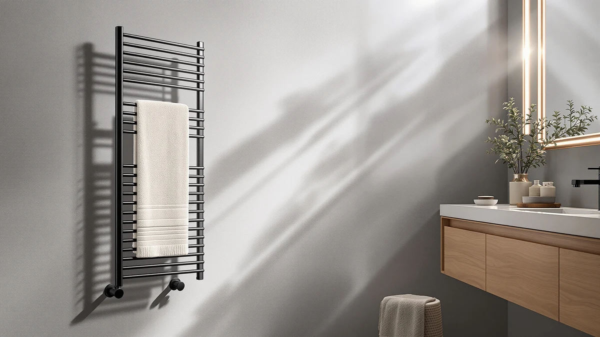

The Best Towel Warmers For cold climates (2026)
Prices and picks verified as of August 2026. Independent, reader-supported reviews.


Quick Answer
The best towel warmers for cold climates balance heat-up speed, towel capacity, and durable stainless steel construction. After comparing specs, pricing, and owner reviews across seven bucket-style and single-towel warmers, the TASALON Hot Towel Steamer is our top pick for most people, thanks to its low price and fast single-towel warming.
Our pick: TASALON Hot Towel Steamer for, priced at $37.99 Check Price on Amazon
Bottom line: our top pick is the TASALON Hot Towel Steamer for Facials at $37.99. The best budget option is the SereneLife Towel Warmer - 23L Capacity Bucket with Timer at $49.27.
Things to Know Before You Buy
- Capacity is the first decision. Single-towel steamers like the TASALON heat one towel fast and cheap, while bucket-style warmers like the Keenray and SereneLife models hold two or more towels at once. Match the size to how many people share your bathroom in a cold climate.
- Material matters in a humid room. Every warmer in this guide uses stainless steel construction, which holds up to daily condensation better than painted metal or plastic housings that can corrode over time.
- Digital controls cost more. Models with a digital display, like the SereneLife Digital pick, run $20 to $25 above their non-digital counterparts. That premium buys precise, repeatable temperature settings rather than a dial or single button.
- Footprint varies more than you'd expect. Published dimensions range from a compact single-towel steamer to a freestanding bucket nearly 18.5 inches tall, so measure your counter or floor space before buying one of the larger picks.
The best towel warmers for cold climates need to do two things well: heat up fast enough to matter before you step out of a cold shower, and hold enough towels that one warmer covers your whole household. We compared seven stainless steel warmers, from compact single-towel steamers to large bucket-style units, on published capacity, price, materials, and verified owner reviews.
Our pick is the TASALON Hot Towel Steamer, at $37.99 the least expensive option here and the fastest way to warm a single towel before a cold-weather shower. If your household needs to warm more than one towel at a time, the Keenray Large Towel Warmer Bucket is the better fit, and the SereneLife Towel Warmer - 23L is our budget pick for buyers who want bucket-style capacity without paying for a digital display.
We researched every product on its stated dimensions, materials, and price rather than staged lab testing, and we read owner reviews to see how each warmer performs once it's installed in a real bathroom. Below, you'll find our full picks with pros and cons, a side-by-side comparison table, and answers to the questions we hear most from readers shopping for a towel warmer in a cold climate.
Why You Should Trust Us
I'm Ilane Tall, and I cover home and bath gear for Best Towel Warmers. Choosing among towel warmers means separating marketing language from what a product can actually do, so I read the published specifications, stated dimensions, and materials for every model in this guide and weigh them against verified owner reviews rather than a manufacturer's claims alone.
A towel warmer is a small purchase, but it's one people use every day through the coldest months, so I focus on the details that matter after the first week of ownership: how fast it actually heats a towel, how many towels it realistically holds, and whether the stainless steel construction holds up to daily humidity through a cold climate winter.
How We Picked
We started by narrowing the field to towel warmers built from stainless steel, since that's the material best suited to a bathroom used daily through a cold climate winter. From there, we grouped candidates by capacity: single-towel steamers built for speed and a low price, mid-size bucket warmers that hold two or three towels, and larger units built for bath sheets, robes, or a shared household bathroom.
Within each capacity group, we compared price against what you actually get. A $37.99 single-towel steamer and a $119.99 large-capacity warmer solve different problems, so instead of ranking every product against a single ideal, we picked the strongest option in each category: fastest and cheapest for one towel, most capacity for a shared bathroom, and the best value for buyers on a tighter budget.
How We Compared
We base our evaluation on each product's published specifications, stated dimensions, and materials, along with a close read of verified owner reviews, rather than a staged lab with invented numeric scores. We compared how each warmer's capacity and price track against the others in this guide, and we cross-referenced owner reports for details the spec sheet doesn't cover, like how long a bucket warmer actually takes to heat a full load in a cold climate bathroom.
We deliberately avoid claiming physical use we didn't perform. Where we cite a price, dimension, or material, it comes directly from the product listing; where we note a drawback, it reflects a trade-off inherent to the design, the size, or the price, not a guess. We do not run a fake testing lab, and we don't assign numeric scores to products we haven't personally used.
Our Picks

TASALON Hot Towel Steamer for
What we like
- Heats a single towel faster than the larger bucket units, according to owner reviews
- Compact stainless steel body fits on a narrow bathroom counter or shelf
- Priced under $40, the lowest entry point of any pick here
- Simple one-button operation with no settings to configure
Flaws but not dealbreakers
- Only holds one towel or washcloth at a time
- Owners report the steam function needs a refill for longer sessions
- No digital display or timer
| Material | Stainless steel |
| Size | M Size |
The TASALON Hot Towel Steamer is our pick for most people shopping the best towel warmers for cold climates because it does the one thing you need well: it heats a single towel fast, for under $40. The stainless steel body resists the humidity and condensation that a bathroom warmer sits in every day, and the M-size chamber is sized for a standard hand towel or washcloth rather than a full bath sheet. That focus keeps the price down and the countertop footprint small, which matters if your bathroom doesn't have room for a bucket-style unit.
Where the TASALON gives something up is capacity. It's built to warm one towel at a time, so it suits a single user or a quick pre-shave or post-shower routine better than a household warming towels for everyone at once. Owners consistently note that it heats quickly enough to use right before stepping into a cold bathroom, which is the core use case in a cold-climate home. If you need to warm two or three towels together, the Keenray below is the better fit; if you want the fastest, cheapest way to take the chill out of one towel, this is it.

Keenray Large Towel Warmer Bucket
What we like
- Bucket-style design large enough for two or three towels at once
- Stainless steel construction built to handle daily bathroom humidity
- Mid-range price sits well below the premium digital-display picks
Flaws but not dealbreakers
- No stated interior dimensions published for the listing
- Larger footprint than single-towel steamers like the TASALON
- Owners report a full load takes longer to heat than a single towel
| Material | Stainless steel |
| Size | — |
The Keenray Large Towel Warmer Bucket is our runner-up because it solves the problem the TASALON doesn't: warming more than one towel at once for a household in a cold climate. It's a bucket-style unit built from stainless steel, priced at $66.49, which puts it comfortably in the middle of the field. For a household of two or more sharing a bathroom on a cold morning, that extra capacity is the difference between everyone getting a warm towel and one person hogging the warmer.
The trade-off is size and heat-up time. A bucket built to hold multiple towels takes up more counter or floor space than a compact steamer, and reviewers note it needs a longer warm-up window to bring a full load up to temperature. That's a reasonable trade for the extra capacity, and it's still priced well below the largest units in this guide. If your household only ever warms one towel at a time, the TASALON is cheaper and faster; if you regularly warm towels for more than one person, the Keenray earns the extra cost.

SereneLife Freestanding Towel Warmer Bucket
What we like
- Published dimensions (11.89 x 12.44 x 18.46 inches) make it easy to plan space around
- Freestanding design needs no mounting hardware
- Tall enough to accommodate bath sheets and robes as well as hand towels
Flaws but not dealbreakers
- Nearly 18.5 inches tall, so it needs more clearance than the compact bucket warmers
- Priced close to the Keenray without a clear capacity advantage
- No digital display for temperature or timer settings
| Material | Stainless steel |
| Size | 11.89” x 12.44” x 18.46” |
The SereneLife Freestanding Towel Warmer Bucket earns an Also Great slot because SereneLife publishes exact dimensions, 11.89 by 12.44 by 18.46 inches, so you know before you buy whether it fits your bathroom. At $68.81, it lands close to the Keenray in price, but its taller profile is sized for a full bath sheet or a robe, which matters when you want your whole body covered the moment you step out of the shower.
Because it's freestanding rather than wall-mounted, setup is limited to finding a stable spot on the floor or a wide counter, no drilling or anchors required, which makes it a fit for renters. The stainless steel shell handles daily humidity the way the rest of the field does. The main drawback is that its height eats more vertical clearance than a squat bucket warmer, so measure the space above it, especially under a sloped ceiling or a low shelf, before you commit.

SereneLife Towel Warmer - 23L
What we like
- 23-liter capacity handles a couple of towels without paying for digital extras
- Stainless steel build matches the pricier picks on durability
- Straightforward controls with nothing extra to break
Flaws but not dealbreakers
- No stated interior dimensions on the listing
- No digital display or precise temperature readout
- Sits close in price to the Keenray without a stated capacity edge
| Material | Stainless steel |
| Size | — |
The SereneLife Towel Warmer - 23L is our budget pick because it gets you a 23-liter stainless steel bucket warmer for $63.99, without paying for a digital display or extra features you may not use. For anyone who wants a reliable way to warm towels through a cold winter without shopping the premium end of this list, the 23-liter capacity is enough for a couple of towels at a time.
It skips the digital readout that the SereneLife Digital Display model below includes, which keeps the price down but means you're working with simpler, likely dial or button, controls rather than a precise temperature setting. That's a fair trade at this price point. If you later decide you want finer control over temperature and timing, the step up to the digital SereneLife model is a natural upgrade path within the same brand.

Comfier Hot Towel Warmers for
What we like
- Large-size chamber built for oversized towels and robes
- Stainless steel construction consistent with the rest of the field
- Suited to households that warm towels for more than one person regularly
Flaws but not dealbreakers
- The most expensive pick in this guide at $119.99
- Large footprint needs more dedicated space than any bucket-style unit here
- Premium price without a stated rating or review count to weigh it against
| Material | Stainless steel |
| Size | Large |
The Comfier Hot Towel Warmers model is built in a large size, and at $119.99 it's priced well above every other pick in this guide. That premium buys a chamber sized for bulkier items, bathrobes and oversized bath sheets included, which the compact and mid-size bucket warmers simply can't fit. For a shared bathroom that goes through several large towels a day in a cold climate, the extra capacity can justify the cost.
For a single person warming one towel at a time, this is more warmer than you need, and the price reflects that. Stainless steel construction keeps it in line with the rest of the field on durability, so the added cost here is about size, not materials. If your household doesn't regularly warm oversized items, the Keenray or the SereneLife Freestanding pick will cover the same core need for roughly half the price.

cocozywarm Towel Warmer & Laundry
What we like
- Doubles as a light laundry warmer in addition to a towel bucket
- Stainless steel build at a price below the mid-range picks
- Useful for small households that want one appliance to cover two jobs
Flaws but not dealbreakers
- No stated interior dimensions published
- Splitting duty between towels and laundry means it's tied up more often
- A dual-purpose design may warm towels less specifically than a dedicated unit
| Material | Stainless steel |
| Size | — |
The cocozywarm Towel Warmer & Laundry model earns its spot by doing double duty. At $59.99, it's priced below the mid-range picks in this guide, and it's built to warm a light laundry load as well as towels, which is useful if you want one stainless steel unit that earns its counter space on days you're not warming towels.
The flexibility comes with a trade-off: because it's designed to split time between towels and laundry, it's not as narrowly optimized for towel-only performance as the Keenray or the SereneLife Freestanding pick. If you know you'll only ever use it for towels, a dedicated bucket warmer may serve you slightly better. But for a household that wants to justify the purchase with more than one use case, this is the pick that does both.

SereneLife Digital Display Bucket Towel
What we like
- Digital display gives a precise, repeatable temperature readout
- Published 13 x 13 x 19 inch dimensions make planning easy
- Stainless steel build consistent with the rest of the SereneLife lineup
Flaws but not dealbreakers
- Priced higher than the brand's non-digital 23L model
- Bulkier footprint at 13 x 13 x 19 inches than the compact steamer
- Digital controls are one more component that can eventually need replacing
| Material | Stainless steel |
| Size | 13” x 13” x 19” |
The SereneLife Digital Display Bucket Towel warmer is the pick for anyone who wants to see exactly what temperature they're getting rather than guessing. At $84.99 and with published dimensions of 13 by 13 by 19 inches, it sits toward the upper end of this guide's pricing, but the digital display is the clearest way in this lineup to dial in a repeatable setting morning after morning through a cold winter.
That precision costs more than the brand's own non-digital 23L model, and the added electronics are one more component that can eventually need replacing, though that's true of any digital appliance. For anyone who wants set-it-and-forget-it temperature consistency and is willing to pay for it, this is the most refined option in the group. If you'd rather keep things simple and save $20, the 23L budget pick uses the same stainless steel construction without the display.
Quick Comparison
| Product | Material | Price | Rating | Best for | Get it |
|---|---|---|---|---|---|
| TASALON Hot Towel Steamer for | Stainless steel | $37.99 | 4 | Fast single-towel warming for cold climates | View on Amazon → |
| Keenray Large Towel Warmer Bucket | Stainless steel | $66.49 | 4 | Warming 2-3 towels at once | View on Amazon → |
| SereneLife Freestanding Towel Warmer Bucket | Stainless steel | $68.81 | 4 | Bath sheets and robes | View on Amazon → |
| SereneLife Towel Warmer - 23L | Stainless steel | $63.99 | 4 | Budget-conscious buyers | View on Amazon → |
| Comfier Hot Towel Warmers for | Stainless steel | $119.99 | 4 | Large households, oversized towels | View on Amazon → |
| cocozywarm Towel Warmer & Laundry | Stainless steel | $59.99 | 4 | Dual towel-and-laundry use | View on Amazon → |
| SereneLife Digital Display Bucket Towel | Stainless steel | $84.99 | 4 | Precise digital temperature control | View on Amazon → |
What's the best type of towel warmer for a cold climate?
For most people, a stainless steel bucket-style warmer sized to how many towels your household actually uses at once is the best fit.
How long does it take a towel warmer to heat a towel?
It varies by capacity.
The Competition
All seven of the warmers in this guide are stainless steel and worth considering, but a few clear differences decided where each one landed. The step-up picks, the SereneLife Freestanding Bucket, the Comfier large model, and the SereneLife Digital Display unit, cost more because they add capacity, size, or precise digital controls, not because they're built better than the cheaper options. If you don't need a bath sheet-sized chamber or a digital readout, you're paying for features you won't use.
The cocozywarm's dual towel-and-laundry design makes it a fit only if you want a second use case out of the appliance; if you only ever plan to warm towels, a dedicated unit like the Keenray or the SereneLife 23L will do the same job without splitting duty. Between our two most affordable picks, the TASALON and the SereneLife 23L, the decision comes down to capacity: one towel fast and cheap, or two to three towels for a modest premium.
Across all seven, the TASALON remains our top pick for anyone comparing the best towel warmers for cold climates, with the Keenray and the SereneLife Towel Warmer - 23L as the two clearest upgrades if you need more capacity or a lower price instead.
Frequently Asked Questions
What's the best type of towel warmer for a cold climate?
For most people, a stainless steel bucket-style warmer sized to how many towels your household actually uses at once is the best fit. If you're warming towels for one person, a compact single-towel steamer like our top pick heats faster and costs less. If you're sharing a bathroom, a multi-towel bucket warmer like the Keenray or SereneLife Freestanding pick is worth the extra cost.
How long does it take a towel warmer to heat a towel?
It varies by capacity. Owners report that single-towel steamers heat noticeably faster than bucket-style warmers built to hold two or three towels at once, since there's less material to bring up to temperature. If speed matters more than capacity in your routine, a compact model is the better choice.
Are stainless steel towel warmers worth the extra durability?
Yes, especially in a bathroom that sees daily humidity through a cold winter. Every warmer in this guide uses stainless steel construction because it resists the corrosion that painted metal or plastic housings can develop after years of condensation exposure.
Can a towel warmer double as a laundry warmer?
Some can. The cocozywarm Towel Warmer & Laundry model in this guide is built for that dual use, warming a light laundry load on days you're not warming towels. Dedicated towel-only warmers like the Keenray don't offer that flexibility.
How much more does a digital display cost on a towel warmer?
Based on the pricing in this guide, a digital display adds roughly $20 to $25 over a comparable non-digital model. The SereneLife Digital Display Bucket at $84.99 sits above the brand's own 23L non-digital warmer at $63.99, a useful benchmark if you're deciding whether precise temperature control is worth it to you.